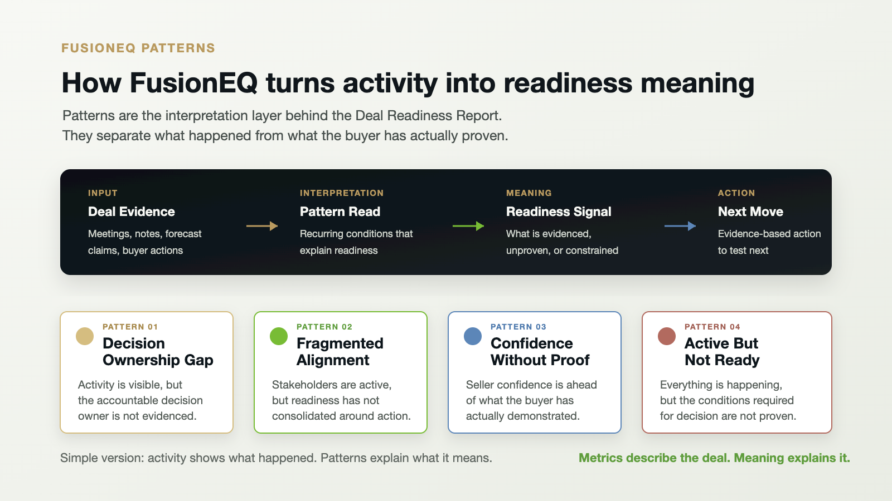

Fusion: Where Emotional Intelligence meets Artificial Intelligence
Pattern Read
A pattern is a decision-readiness condition behind the visible deal.
Teams recognize the moments: the deal is active, the updates sound strong, and the buying organization still has more decision work to do.
FusionEQ identifies the pattern, so the next move can be taken earlier, while the deal can still be influenced.
How The Report Reads Patterns
Patterns help the Deal Readiness Report turn activity into meaning.
FusionEQ separates what happened from what has actually been evidenced, then translates the read into readiness meaning and a clearer next move.

Why Interpretation Matters
The pipeline shows what is happening. FusionEQ clarifies what still needs evidence.
Human judgment still matters. FusionEQ helps organize the available context so leaders can see where confidence may be supported, where it may be premature, and where the next conversation should create more clarity.
FusionEQ does not replace judgment. It sharpens it.
01Positive signals can outpace readiness proof.
Meetings, responsiveness, and next steps can make a deal look healthy while important decision conditions still need evidence.
02The pattern is often distributed.
No single note or metric explains the deal. The read becomes clearer when the available context is interpreted together.
03FusionEQ combines AI structure with EQ interpretation.
FusionEQ turns the available context into a readiness read the team can use before the next move.
One Pattern Example
This is an illustrative example of a pattern FusionEQ can identify.
A deal can look alive because activity continues. FusionEQ reads whether the available evidence supports real deal movement or whether more clarity is needed.
Illustrative Pattern
Visible Signal
Meetings, next steps, and positive engagement continue.
Readiness Question
The activity may need stronger evidence before confidence should increase.
Better Move
Use the next interaction to clarify whether the deal is gaining real decision support.
The deal did not change.
The interpretation did.
That is the moment the next question gets sharper.
Pattern to next question
See how an illustrative pattern appears inside a Deal Readiness Report preview.